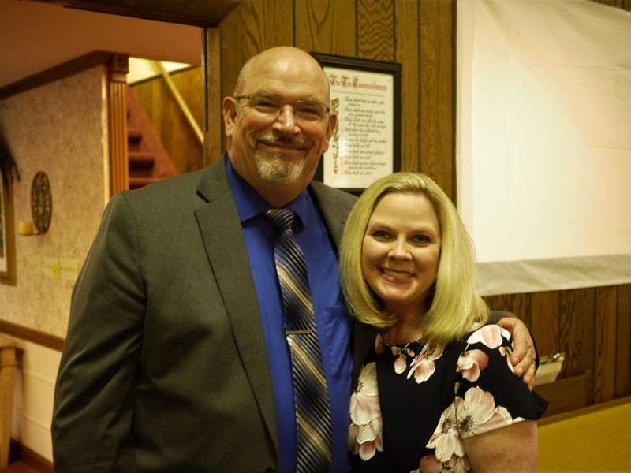

Pastor
.JPG)
Pastor Bob Cutler has been pastoring for nearly 52 years. We are blessed to have him and his wife, Sue, serving in our church. They love our church and our community and have been a blessing to more people than we could possibly count. They are building a godly legacy of love and service, with a passion for serving Christ and their community.
Youth Pastor
Brother Steve Dotson and his wife, Tracy, are a great blessing in the youth group. Their love for the young people is clearly evident in all they do, from lessons to activities, as they seek to lead the next generation in the ways of their Lord.
Music Director
Brother Rick Lauritzen is in charge of our music ministry, leading the singing and directing the choir. His wife, Miss Beth, is our pianist. Together with their children, they serve our church through music and in many other areas.
Sunday School Teachers
Cindy Osborne
Miss Cindy teaches the youngest children, giving them an early start in learning about God. A sweet, dedicated, godly lady, she is loved by her students and appreciated by her church.
Rick Lauritzen
On top of leading the music ministry, Brother Rick also teaches a Sunday School class, as well as leading the kids in Bible classes on Wednesday nights.
Sue Cutler
Miss Sue teaches the young ladies' group, ages 13 and up. Her aim is to help her students grow into the godly Christian ladies they wish to be.
Sandra Noel
Miss Sandra leads the ladies' Bible study group on Sunday mornings. A humble, honest teacher, she brings lessons that herself as well as her group to grow as Christians.
Steve Dotson
As well as leading the youth group, Brother Steve also leads the men's Bible study group. His lessons are engaging and often bring about insightful conversations in his class concerning the scriptures and principles in his lessons.
Don Williams
When he is not visiting other churches in his capacity as an evangelist, Brother Don leads a Bible study group upstairs on Sunday mornings.
Naomi Baldock
Our newest teacher, Naomi Baldock teaches the second age group during the morning service. Her students love her creative, engaging lessons as she teaches them how to live godly lives and grow in faith.
Nursery
Miss Beth Lauritzen oversees the nursery.
Church Secretary
Miss Sue Cutler faithfully tends to her duties as church secretary. Part of her work is evident in the weekly bulletins she puts together.
Sign Language Interpreter
Miss Sharon is our church's faithful sign language interpreter, translating the preaching, praying, and singing for the deaf.
Mission Board
{names...} Together, our mission board discuss such matters as taking on new missionaries for support, increasing support, sending donations to missionaries, and more before bringing it before the church for a final decision.